Sagara Daily Checkup
Sistem manajemen armada kendaraan yang terintegrasi untuk memantau kondisi kendaraan, mengelola perbaikan, pengisian bahan bakar, dan permintaan towing secara real-time.
- 1. Gambaran Umum
- 2. Peran Pengguna
- 3. Login & Autentikasi
- 4. Dashboard Admin
- 5. Manajemen Kendaraan
- 6. Pengajuan Perbaikan
- 7. Pengajuan Towing (Admin)
- 8. Laporan Bensin
- 9. Laporan Biaya
- 10. Generate Key
- 11. Dashboard Driver
- 12. Laporan Kerusakan
- 13. Upload Struk Bensin
- 14. Request Towing
- 15. Sagara AI (Driver)
- 16. Dashboard Mekanik
- 17. Detail Kerusakan
- 18. Buat Bill Perbaikan
- 19. Sagara AI (Mekanik)
- 20. Alur Status Kendaraan
- 21. FAQ
Sagara Daily Checkup adalah aplikasi web berbasis Laravel + Inertia.js (React) yang dirancang untuk membantu perusahaan dalam mengelola armada kendaraan operasional secara efisien. Sistem ini menghubungkan tiga peran utama — Admin, Driver, dan Mekanik — dalam satu platform terintegrasi.
username + key 8 karakter.
- Kelola data kendaraan & pengemudi
- Setujui & tugaskan pengajuan perbaikan
- Pantau pengajuan towing
- Proses reimburse bensin driver
- Lihat laporan biaya perbaikan
- Generate key akun pengguna
- Update foto profil & logo aplikasi
- Lihat status kendaraan yang ditugaskan
- Laporan kerusakan kendaraan
- Upload struk bensin untuk reimburse
- Request towing dengan lokasi GPS
- Gunakan Sagara AI untuk diagnosa
- Batalkan pengajuan yang belum diproses
- Lihat daftar tugas perbaikan
- Tandai status kerja (Perbaikan / Pending)
- Buat bill/tagihan setelah perbaikan selesai
- Konsultasi dengan Sagara AI
- Atur ketersediaan diri (Available/Full)
| Fitur | Admin | Driver | Mekanik |
|---|---|---|---|
| Kelola kendaraan | ✅ | ❌ | ❌ |
| Laporan kerusakan | 🔍 Lihat | ✅ Buat | 🔍 Kerjakan |
| Approve perbaikan | ✅ | ❌ | ❌ |
| Upload struk bensin | ❌ | ✅ | ❌ |
| Proses reimburse | ✅ | ❌ | ❌ |
| Request towing | ❌ | ✅ | ❌ |
| Pantau towing | ✅ | 🔍 Milik sendiri | ❌ |
| Generate key user | ✅ | ❌ | ❌ |
| Buat bill perbaikan | ❌ | ❌ | ✅ |
| Sagara AI | ❌ | ✅ | ✅ |
Sistem Sagara Daily Checkup menggunakan kombinasi Username dan Key (bukan password biasa) untuk login. Key adalah kode unik 8 karakter yang digenerate oleh Admin.
• Admin:
/admin/login• Driver:
/driver/login• Mekanik:
/mekanik/login
Langkah-langkah Login
-
1Buka URL login sesuai peranAkses halaman login yang sesuai dengan peran Anda (Admin, Driver, atau Mekanik). Halaman utama (
/) akan menampilkan pilihan peran. -
2Masukkan UsernameMasukkan username yang telah diberikan oleh Admin. Username bersifat unik untuk setiap pengguna.
-
3Masukkan Key (8 Karakter)Masukkan Key unik 8 karakter yang diberikan oleh Admin. Key bersifat case-insensitive (sistem akan mengkonversi ke huruf besar). Jangan bagikan Key kepada siapapun.
-
4Klik tombol LoginJika Username dan Key benar, Anda akan diarahkan ke dashboard sesuai peran Anda.
Logout
Untuk keluar dari sistem, klik tombol Logout yang tersedia di menu profil atau sidebar. Setelah logout, sesi Anda akan dihapus dan Anda akan diarahkan kembali ke halaman login.
Dashboard Admin menampilkan ringkasan kondisi operasional kendaraan secara keseluruhan dalam satu tampilan.
Fitur Dashboard
-
📊Grafik Pengajuan 7 HariGrafik batang yang menampilkan jumlah pengajuan perbaikan per hari dalam 7 hari terakhir untuk memantau tren.
-
🕐Aktivitas TerbaruFeed aktivitas real-time: pengajuan perbaikan baru, perbaikan yang disetujui, dan laporan biaya yang dibuat — diurutkan dari terbaru.
-
🖼️Update Profil & LogoAdmin dapat mengganti foto profil dan logo aplikasi. Logo dapat direset ke tampilan default jika diperlukan.
Menu Manajemen Kendaraan (/admin/kendaraan) memungkinkan Admin mendaftarkan, memperbarui, dan menghapus data kendaraan yang terdaftar dalam sistem.
Menambah Kendaraan Baru
-
1

Gambar 5.1 Tombol Tambah Kendaraan pada halaman Manajemen Kendaraan Klik tombol "Tambah Kendaraan"Tombol ini terdapat di bagian atas halaman manajemen kendaraan. -
2
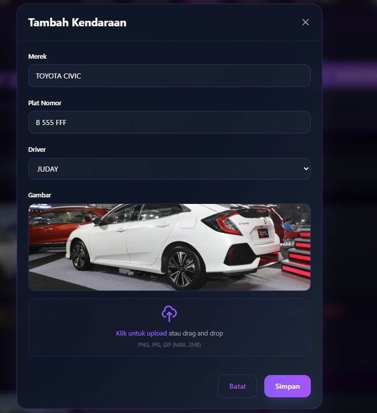
Gambar 5.2 Form Tambah Kendaraan Isi form data kendaraanMerek – Nama merek/tipe kendaraan (contoh: Toyota Avanza)
Plat Nomor – Nomor plat unik kendaraan (contoh: B 1234 ABC)
Driver – Pilih pengemudi yang ditugaskan (opsional; 1 driver hanya bisa punya 1 kendaraan)
Foto Kendaraan – Upload foto kendaraan (JPG/PNG, maks. 2MB, opsional) -
3
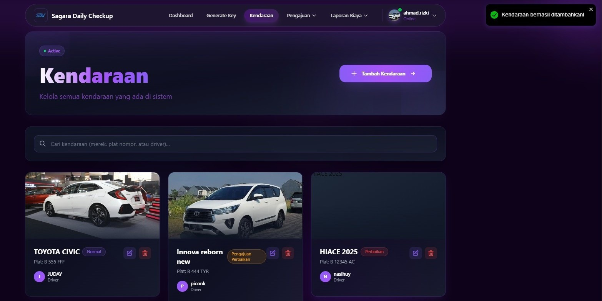
Gambar 5.3 Notifikasi berhasil menambahkan kendaraan Simpan dataKlik Simpan. Sistem akan menampilkan notifikasi sukses dan kendaraan muncul di daftar.
Edit & Hapus Kendaraan
Pencarian Kendaraan
Gunakan kolom pencarian di bagian atas untuk mencari kendaraan berdasarkan merek, plat nomor, atau nama driver. Hasil akan difilter secara otomatis.
Status Kendaraan
Halaman ini (/admin/pengajuan-perbaikan) menampilkan semua pengajuan perbaikan kendaraan yang masuk dari Driver. Admin bertugas mereview dan menugaskan ke Mekanik yang tersedia.
Tab Pengajuan Menunggu Persetujuan
Tab pertama menampilkan pengajuan yang belum ditugaskan ke mekanik manapun.
-
1
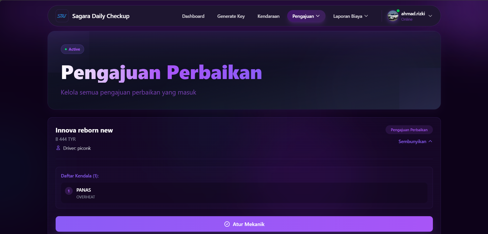
Gambar 6.1 Halaman tinjau detail pengajuan perbaikan Tinjau detail pengajuanLihat informasi: nama driver, plat nomor, merek kendaraan, daftar kendala (nama & deskripsi kerusakan), dan catatan tambahan dari driver. -
2
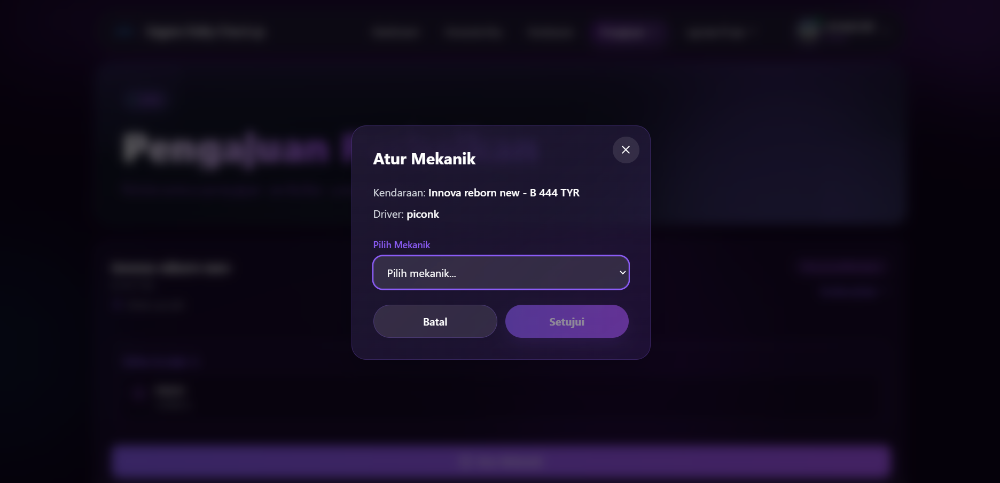
Gambar 6.2 Memilih mekanik untuk pengajuan perbaikan Pilih MekanikPilih mekanik yang tersedia (status Available) dari dropdown. Hanya mekanik dengan status Available yang dapat dipilih. -
3
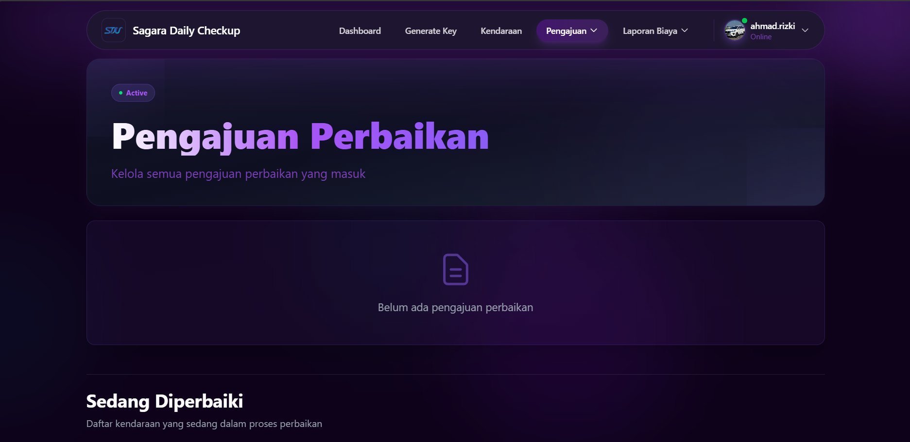
Gambar 6.3 Hasil setelah pengajuan perbaikan disetujui dan ditugaskan Klik "Setujui & Tugaskan"Sistem akan membuat record penugasan dan mengubah status kendaraan menjadi Perbaikan. Mekanik akan melihat tugas ini di dashboard mereka.
Tab Daftar Perbaikan (Sedang Dikerjakan)
Tab kedua menampilkan semua penugasan perbaikan yang sedang berjalan, termasuk informasi kendaraan, driver, mekanik yang bertugas, dan daftar kendala yang perlu diperbaiki.
Halaman ini (/admin/pengajuan-towing) menampilkan semua permintaan towing dari driver yang perlu diproses oleh Admin.
Alur Pemrosesan Towing
Langkah Proses Towing
-
1
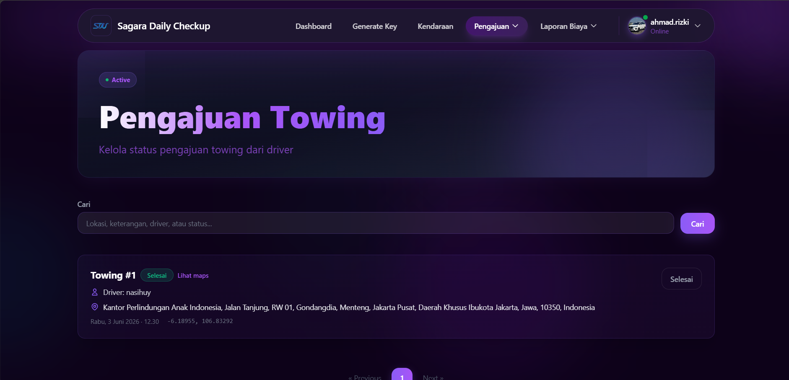
Gambar 7.1 Halaman tinjau detail permintaan towing Tinjau detail permintaanLihat informasi: nama driver, lokasi penjemputan, koordinat GPS (jika tersedia), dan keterangan tambahan dari driver. -
2
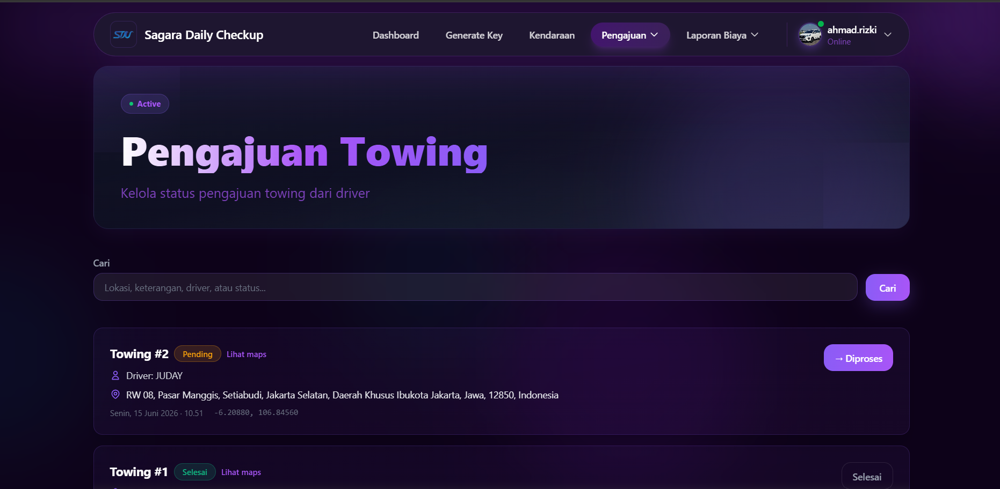
Gambar 7.2 Tombol Tandai Diproses pada pengajuan towing Klik "Tandai Diproses"Mengubah status towing ke Diproses. Sistem otomatis mengubah status kendaraan driver menjadi Pengajuan Perbaikan dan mencatat kendala "Pengajuan Towing" dalam sistem. -
3
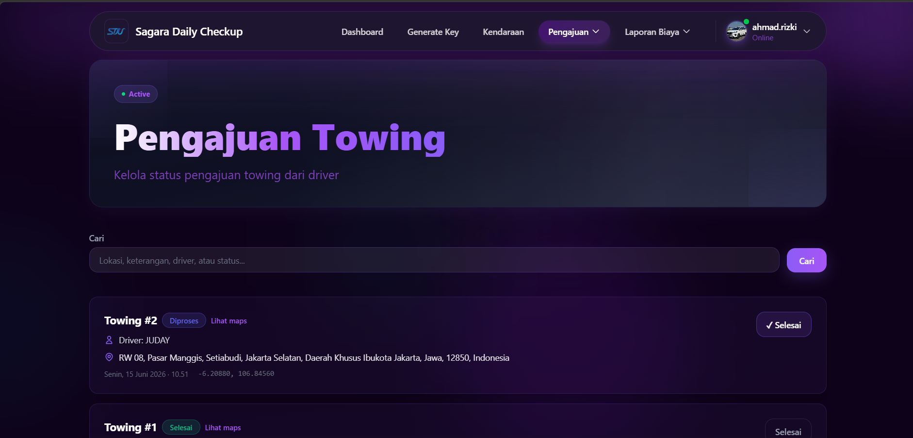
Gambar 7.3 Tombol Tandai Selesai pada pengajuan towing Klik "Tandai Selesai"Setelah kendaraan berhasil ditowing ke bengkel, tandai pengajuan sebagai Selesai.
Halaman ini (/admin/laporan-bensin) menampilkan semua struk bensin yang diupload oleh driver dan menunggu proses reimburse dari Admin.
Cara Memproses Reimburse
-
1
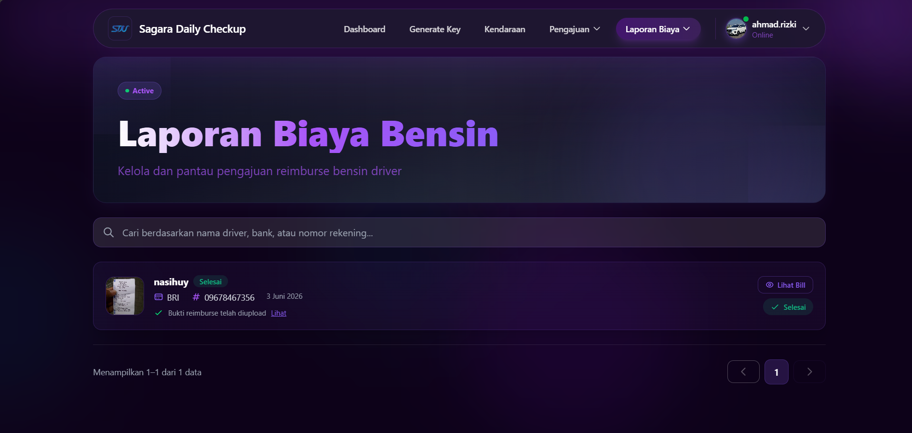
Gambar 8.1 Halaman pencarian dan daftar pengajuan struk bensin Cari pengajuan strukGunakan kolom pencarian untuk mencari berdasarkan nama driver, username, nama bank/e-wallet, atau nomor rekening. -
2
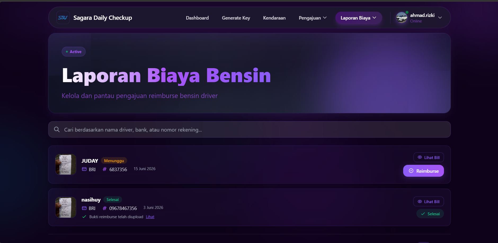
Gambar 8.2 Halaman tinjau detail struk bensin Tinjau detail struk bensinLihat foto struk bensin yang diupload driver, informasi bank/e-wallet tujuan, dan nomor rekening. -
3
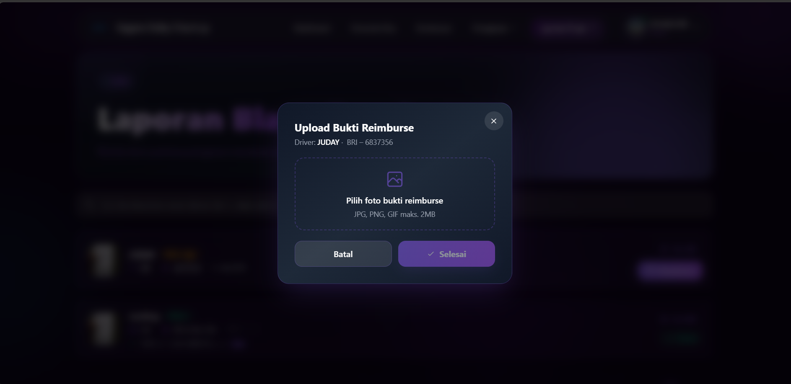
Gambar 8.3 Form upload bukti reimburse bensin Upload bukti reimburseUpload foto bukti transfer/reimburse (JPG/PNG, maks. 2MB). Klik tombol Proses Reimburse. -
4
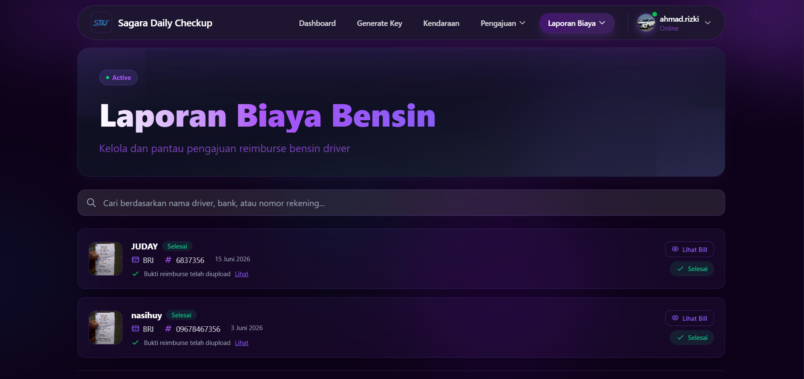
Gambar 8.4 Status reimburse bensin telah selesai Reimburse selesaiPengajuan akan ditandai sebagai selesai direimburse. Driver dapat melihat status pengajuannya berubah.
Halaman ini (/admin/laporan-biaya) menampilkan seluruh bill perbaikan yang telah dibuat oleh mekanik, lengkap dengan detail biaya per item dan total keseluruhan.
Informasi yang Ditampilkan
Pencarian
Gunakan fitur pencarian untuk memfilter laporan berdasarkan merek kendaraan, plat nomor, nama driver, nama mekanik, atau nominal biaya.
Halaman Generate Key (/admin/generate-key) digunakan Admin untuk membuat dan mengelola akun pengguna (Admin, Driver, Mekanik) beserta key login mereka.
Membuat Akun User Baru
-
1
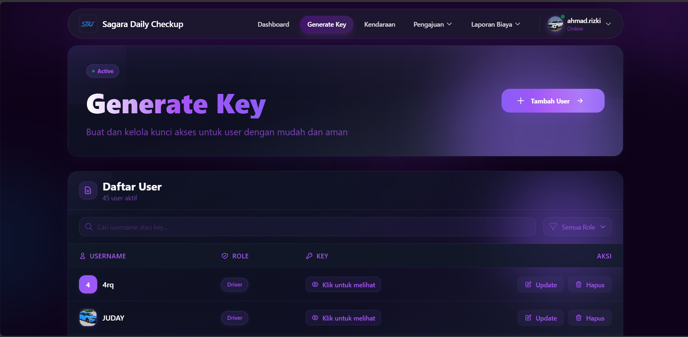
Gambar 10.1 Tombol Tambah User pada halaman Generate Key Klik "Tambah User"Buka form tambah user baru. -
2
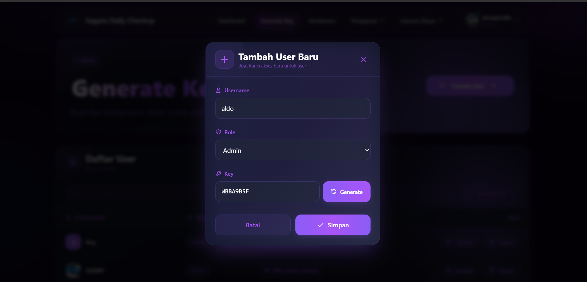
Gambar 10.2 Form isi data user baru Isi data userUsername – Nama pengguna unik (tidak boleh sama dengan user lain)
Peran – Pilih: Admin, Mekanik, atau Driver
Key – Kode akses unik tepat 8 karakter (huruf dan/atau angka) -
3
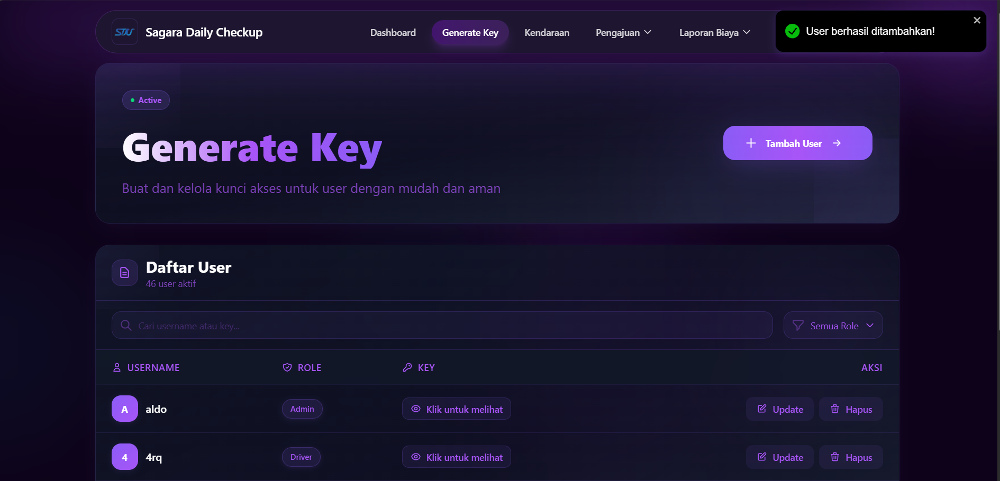
Gambar 10.3 User berhasil ditambahkan dan siap membagikan key ke pengguna Simpan & bagikan key ke penggunaSimpan data user. Catat dan berikan key kepada pengguna yang bersangkutan secara aman (jangan via platform publik).
Filter & Pencarian User
Gunakan kolom pencarian untuk mencari berdasarkan username atau key. Gunakan filter Peran untuk menampilkan hanya Admin, Driver, atau Mekanik saja.
Edit & Hapus User
Dashboard Driver (/driver/dashboard) adalah halaman utama yang menampilkan informasi kendaraan yang ditugaskan kepada Anda beserta statusnya saat ini.
Informasi di Dashboard
Aksi yang Tersedia
Update Foto Profil
Driver dapat memperbarui foto profil melalui menu pengaturan profil di dashboard. Format yang didukung: JPG, PNG, GIF (maks. 2MB).
Gunakan halaman Laporan Kerusakan (/driver/report) untuk melaporkan kondisi kendaraan yang bermasalah kepada Admin dan Mekanik.
Cara Membuat Laporan Kerusakan
-
1
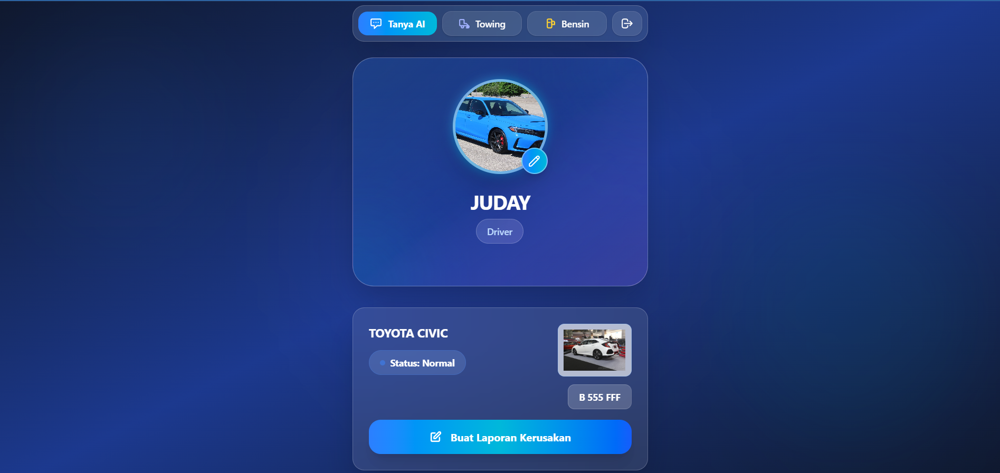
Gambar 12.1 Tombol Buat Laporan Kerusakan pada dashboard Driver Akses halaman LaporanKlik menu "Laporan Kerusakan" atau tombol "Laporkan Kerusakan" dari dashboard. -
2
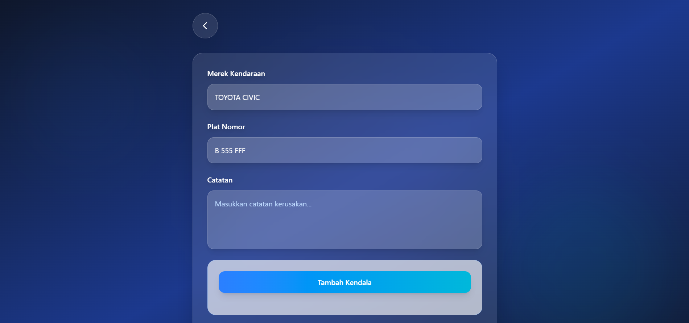
Gambar 12.2a Form laporan kerusakan dan tombol Tambah Kendala 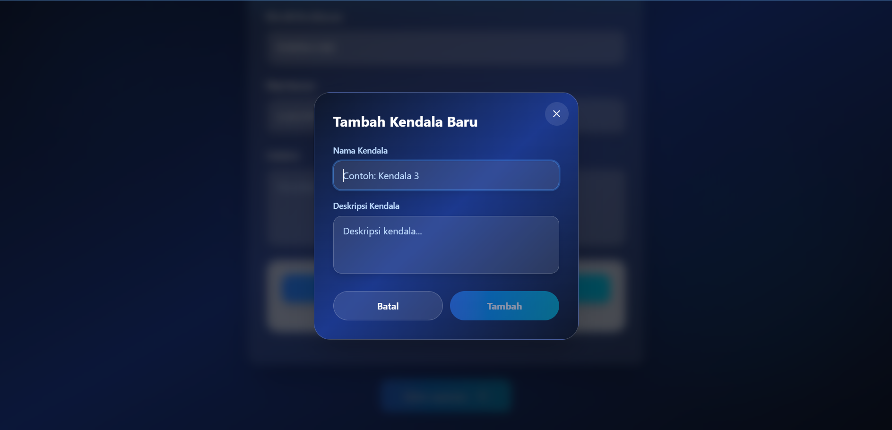
Gambar 12.2b Form pengisian kendala baru Tambahkan kendalaUntuk setiap kendala, isi:
• Nama Kendala – Jenis kerusakan (contoh: "Ban bocor", "AC tidak dingin")
• Deskripsi – Keterangan lebih detail tentang kerusakan
Klik tombol "+ Tambah Kendala" untuk menambahkan lebih dari satu kendala. -
3
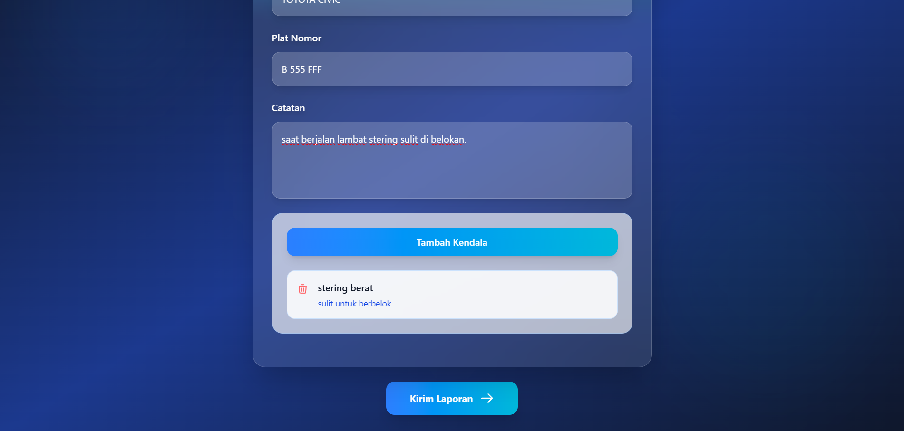
Gambar 12.3 Form laporan kerusakan dengan catatan tambahan Tambahkan catatan (opsional)Isi kolom catatan jika ada informasi tambahan yang perlu disampaikan ke Admin atau Mekanik. -
4
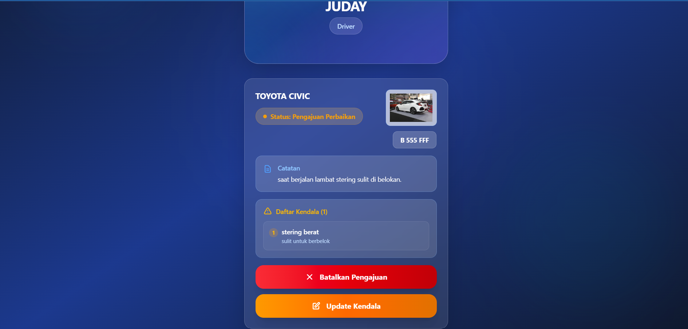
Gambar 12.4 Laporan kerusakan berhasil dikirim Submit laporanKlik "Kirim Laporan". Status kendaraan Anda akan berubah menjadi "Pengajuan Perbaikan" dan laporan akan masuk ke antrian Admin.
Halaman Upload Struk Bensin (/driver/struk-bensin) memungkinkan Driver mengajukan reimburse untuk pengeluaran bahan bakar kendaraan dinas.
Cara Upload Struk Bensin
-
1
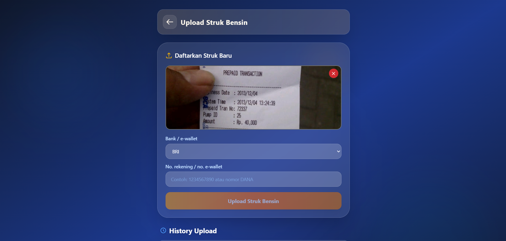
Gambar 13.1 Menyiapkan dan mengunggah foto struk bensin Siapkan foto strukAmbil foto struk bensin yang jelas dan terbaca. Format: JPG, PNG, GIF — maksimal 2MB. -
2
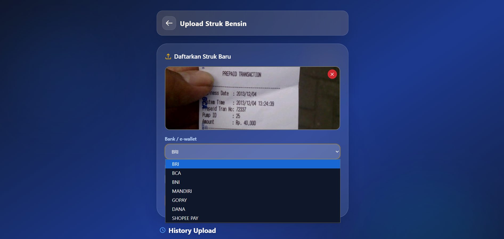
Gambar 13.2 Memilih bank atau e-wallet tujuan reimburse Pilih Bank/E-Wallet TujuanPilih bank atau e-wallet tujuan transfer reimburse dari dropdown yang tersedia. -
3
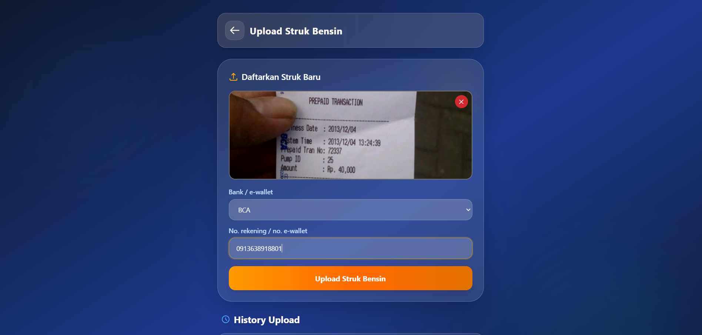
Gambar 13.3 Mengisi nomor rekening atau e-wallet tujuan reimburse Masukkan Nomor Rekening/E-WalletIsi nomor rekening atau nomor e-wallet dengan benar. Pastikan data ini akurat karena Admin akan mentransfer ke nomor ini. -
4
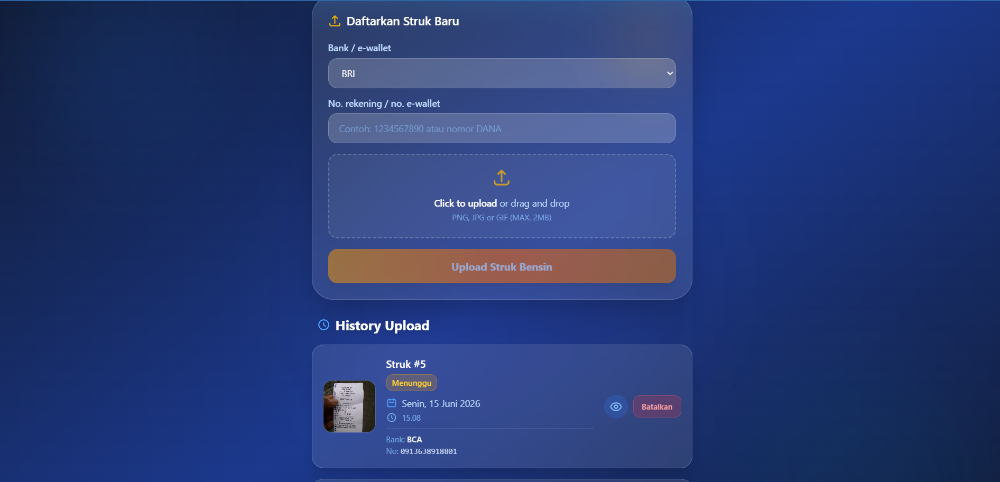
Gambar 13.4 Hasil upload dan submit struk bensin Upload & SubmitKlik "Upload Struk". Pengajuan akan masuk ke antrian Admin untuk diproses.
Riwayat Pengajuan
Di bagian bawah halaman, Anda dapat melihat riwayat semua pengajuan struk bensin beserta statusnya:
| Status | Keterangan | Aksi |
|---|---|---|
| ⏳ Menunggu | Belum diproses Admin | Dapat dibatalkan |
| ✅ Direimburse | Sudah diproses & bukti transfer tersedia | Lihat bukti transfer |
Gunakan halaman Request Towing (/driver/towing) ketika kendaraan Anda mogok atau tidak dapat dikendarai dan membutuhkan bantuan towing.
Cara Mengajukan Request Towing
-
1
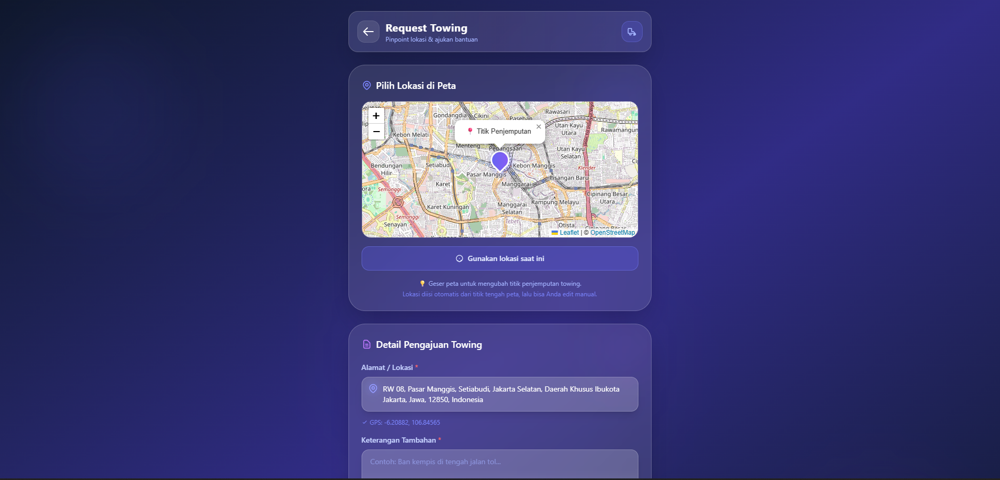
Gambar 14.1 Halaman form pengajuan towing Klik "Ajukan Towing"Buka form pengajuan towing baru. -
2
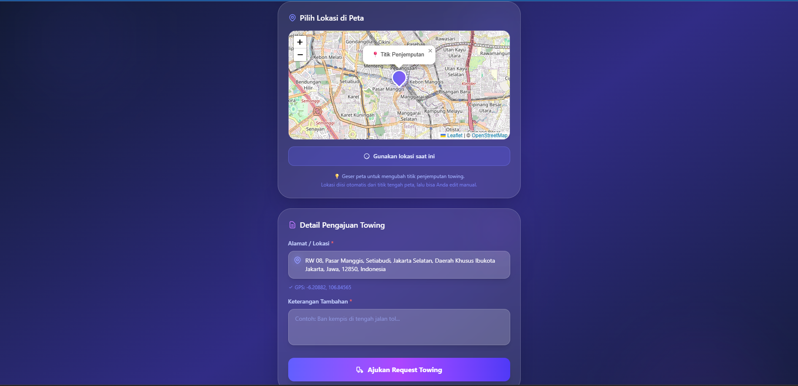
Gambar 14.2 Menentukan lokasi penjemputan towing Isi Lokasi Saat IniMasukkan lokasi kendaraan Anda saat ini (nama jalan, patokan, atau alamat lengkap). Maksimal 1000 karakter. -
3
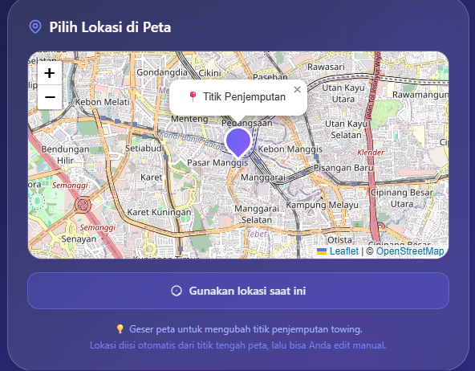
Gambar 14.3 Mengaktifkan lokasi GPS untuk titik penjemputan towing Aktifkan Lokasi GPS (Opsional)Jika tersedia, sistem dapat mendeteksi koordinat GPS Anda secara otomatis untuk memudahkan tim towing menemukan lokasi Anda. -
4
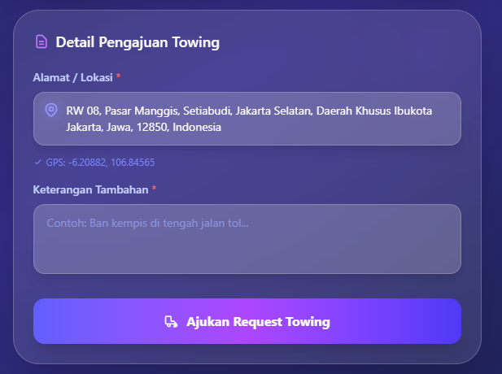
Gambar 14.4 Mengisi keterangan tambahan pada pengajuan towing Tambahkan Keterangan (Opsional)Jelaskan kondisi kendaraan atau informasi tambahan yang perlu diketahui tim towing. Maksimal 500 karakter. -
5
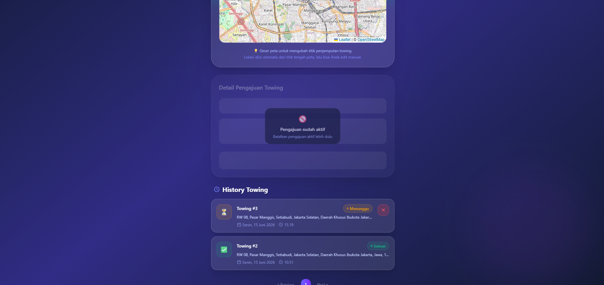
Gambar 14.5 Hasil setelah pengajuan towing berhasil dikirim Kirim PengajuanKlik "Kirim Request Towing". Pengajuan akan masuk dengan status Pending dan Admin akan segera memprosesnya.
Riwayat Towing
Bagian bawah halaman menampilkan riwayat semua pengajuan towing Anda beserta statusnya (Pending, Diproses, Selesai).
Sagara AI (/driver/tanya-ai) adalah asisten berbasis kecerdasan buatan yang membantu Driver mendiagnosa kerusakan kendaraan melalui percakapan interaktif.
Cara Menggunakan Sagara AI
-
1
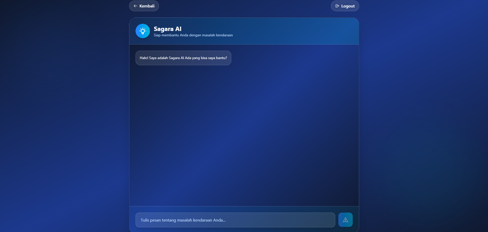
Gambar 15.1 Halaman percakapan Sagara AI untuk Driver Buka halaman Sagara AIAkses melalui menu "Sagara AI" di sidebar atau dari dashboard Driver. -
2
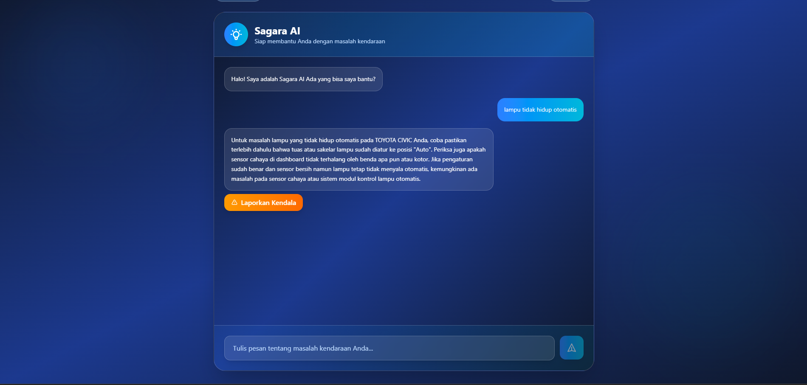
Gambar 15.2 Driver mendeskripsikan gejala kerusakan pada Sagara AI Deskripsikan gejala kerusakanKetik gejala atau keluhan tentang kendaraan Anda dalam bahasa natural. Contoh: "Mesin terasa bergetar dan ada suara aneh saat akselerasi". -
3
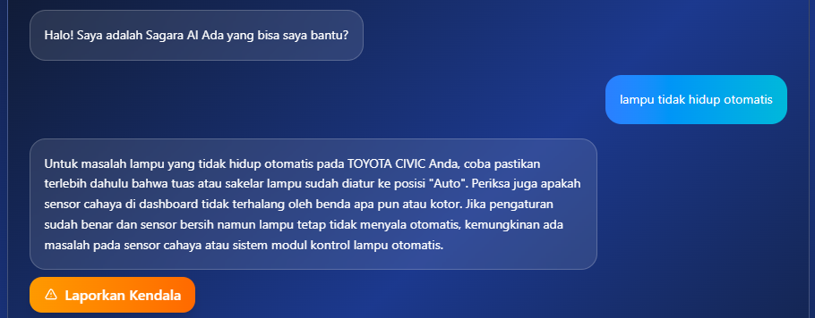
Gambar 15.3 Membaca analisis dan saran dari Sagara AI Baca analisis AISagara AI akan memberikan kemungkinan penyebab kerusakan dan saran langkah awal yang dapat diambil. -
4
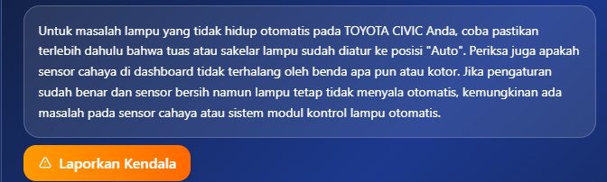
Gambar 15.4 Melaporkan hasil konsultasi AI ke sistem Laporkan ke sistem (opsional)Berdasarkan hasil diagnosa AI, Anda dapat langsung membuat laporan kerusakan resmi ke sistem dengan mengklik tombol "Laporkan Kerusakan" dari hasil chat.
Dashboard Mekanik (/mekanik/dashboard) menampilkan semua tugas perbaikan kendaraan yang ditugaskan kepada Mekanik yang sedang login, beserta riwayat bill yang sudah dibuat.
Tab Tugas Aktif
Menampilkan semua penugasan perbaikan yang belum selesai (belum ada bill). Setiap kartu tugas menampilkan:
Aksi dari Dashboard
Atur Ketersediaan
Mekanik dapat mengatur status ketersediaan diri untuk menerima tugas baru:
Jika status Full, Admin tidak akan dapat menugaskan pengajuan perbaikan baru kepada Anda.
Tab Riwayat Bill
Menampilkan semua bill perbaikan yang sudah Anda buat beserta detail biaya dan kendaraan yang diperbaiki.
Halaman Detail Kerusakan (/mekanik/detailkerusakan/{id}) menampilkan informasi lengkap tentang tugas perbaikan spesifik yang ditugaskan kepada Mekanik.
Informasi yang Tersedia
Setelah perbaikan kendaraan selesai, Mekanik membuat Bill (/mekanik/bill) yang berisi detail biaya perbaikan. Bill ini akan masuk ke Laporan Biaya Admin.
Cara Membuat Bill
-
1
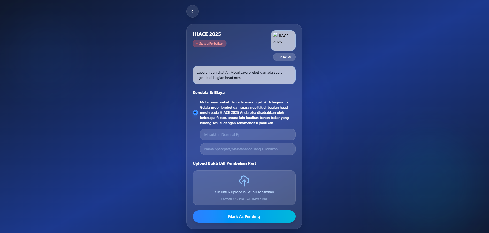
Gambar 18.1 Halaman pembuatan bill perbaikan kendaraan Akses halaman BillDari halaman Detail Kerusakan atau Dashboard, klik tombol "Buat Bill". -
2
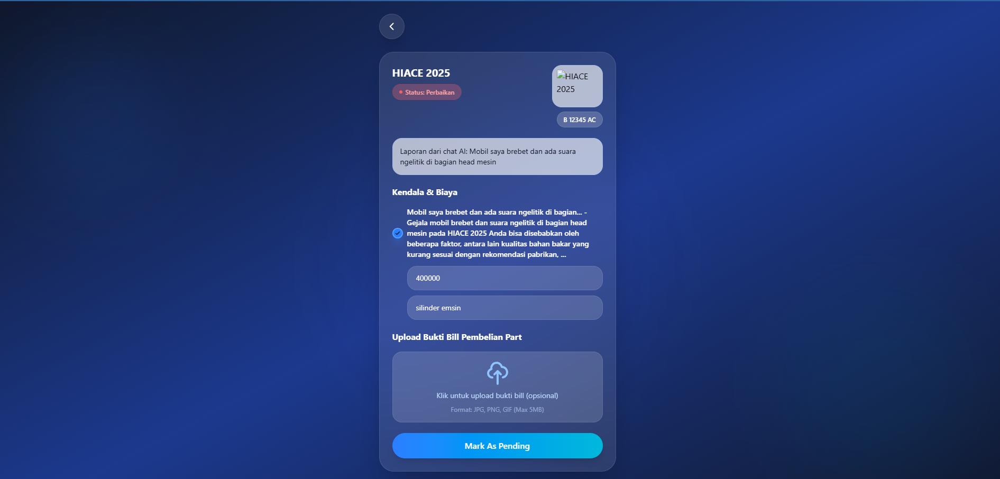
Gambar 18.2 Mengisi item biaya pada form bill perbaikan Tambahkan item biayaUntuk setiap item perbaikan, isi:
• Keterangan – Deskripsi pekerjaan/item (contoh: "Ganti oli mesin")
• Nominal – Biaya dalam rupiah
• Sparepart – Nama sparepart yang digunakan (opsional)
Klik "+ Tambah Item" untuk menambahkan lebih banyak item. -
3
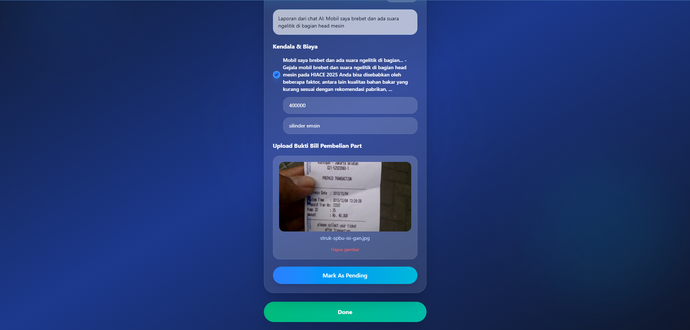
Gambar 18.3 Mengunggah bukti bill pembelian part Upload bukti bill (opsional)Upload foto bukti tagihan/nota perbaikan jika ada. Format: JPG, PNG, GIF — maksimal 5MB. -
4Tinjau total biayaPastikan semua item dan total biaya sudah benar sebelum menyimpan.
-
5
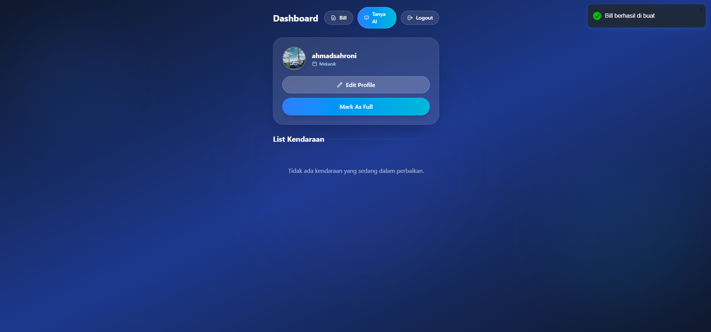
Gambar 18.4 Bill perbaikan berhasil disubmit Submit BillKlik "Buat Bill". Sistem akan menyimpan bill, menghitung total biaya otomatis, dan mengubah status kendaraan kembali ke Normal.
Sagara AI untuk Mekanik (/mekanik/tanya-ai) dirancang khusus untuk membantu Mekanik mendapatkan saran teknis dan diagnosa lebih mendalam terkait kerusakan kendaraan yang sedang ditangani.
Keunggulan untuk Mekanik
Setiap kendaraan dalam sistem memiliki status yang berubah mengikuti alur proses perbaikan. Berikut adalah penjelasan lengkap setiap status dan transisinya.
| Status | Keterangan | Pemicu | Oleh |
|---|---|---|---|
| 🟢 Normal | Kendaraan beroperasi normal, tidak ada pengajuan aktif | Status awal / Setelah bill dibuat | Sistem |
| 🟠 Pengajuan Perbaikan | Driver telah mengajukan laporan kerusakan, menunggu persetujuan Admin | Driver submit laporan / Towing diproses Admin | Driver / Sistem |
| 🔵 Perbaikan | Pengajuan sudah disetujui Admin dan ditugaskan ke Mekanik | Admin approve & assign mekanik | Admin |
| 🟣 Pending | Perbaikan ditunda sementara (menunggu sparepart/bahan) | Mekanik klik "Tandai Pending" | Mekanik |
| 🟢 Normal | Kembali normal setelah mekanik selesai dan buat bill | Mekanik submit bill perbaikan | Mekanik / Sistem |
Diagram Alur Lengkap
Alur Proses Towing
• Bukti bill perbaikan: maks. 5MB (JPG, PNG, GIF)
isproses = true), pengajuan tidak dapat lagi dibatalkan oleh Driver.